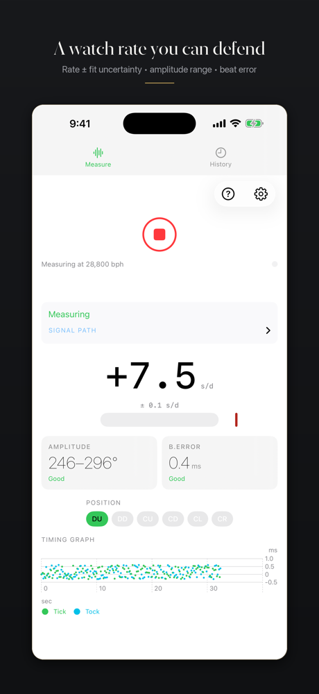
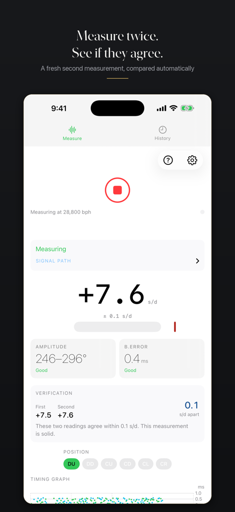
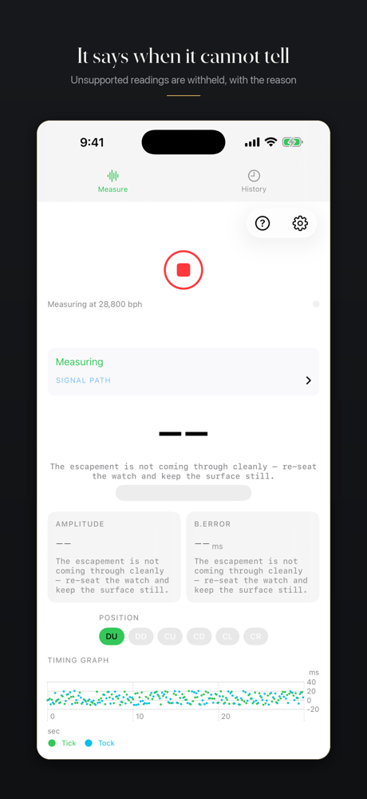
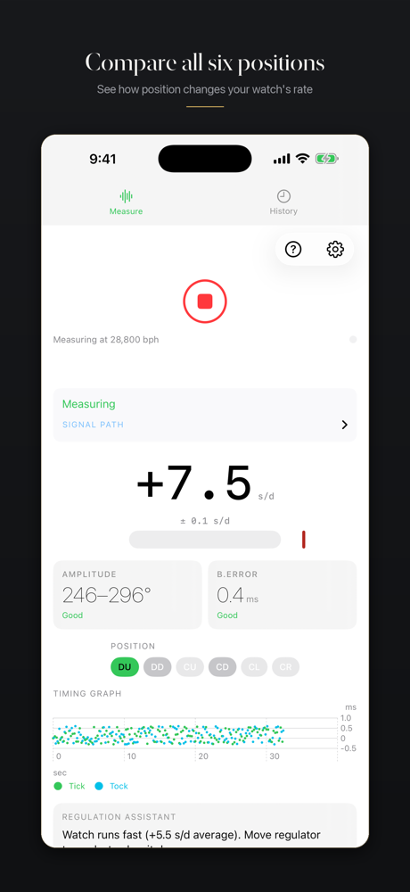
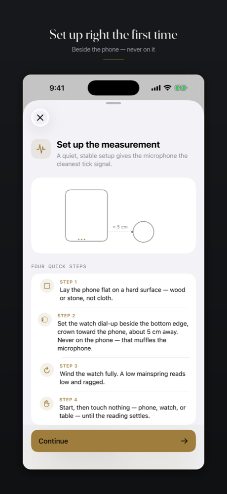

{kind=link}

{kind=link}

{kind=link}

{kind=link}


{kind=link}

Press kit
Hairspring measures how well a mechanical watch keeps time, using the iPhone microphone — and tells you when it can't. Every rate carries its statistical fit uncertainty; when the signal won't support a number, the app says so and names the fix instead of printing something plausible. Its signature check: measure the same watch twice, and it states whether the two readings agree. The saved History entry and PDF keep both readings, their fit uncertainty, the agreement limit, verdict, and analysis version.
| App name | Hairspring: Watch Timegrapher |
| Developer | Marat Oganesyan (independent) |
| Released | August 2026, current version 1.0.2 |
| Price | Paid upfront ($9.99 USD; Apple localizes by storefront) — no subscription, no in-app purchase, no ads, no account |
| Platform | iPhone, iOS 18+ (iPhone only by design — the measurement wants the handset flat with the watch beside the bottom microphone) |
| Privacy | App Store label: Data Not Collected. Audio is analysed on device and never transmitted by the app. |
| App Store | apps.apple.com/us/app/hairspring-timegrapher/id6797146448 |
| Contact | moganes@gmail.com |
Phone timegrapher apps have a credibility problem the watch forums know well: put the same watch down twice and you often get two confident numbers that disagree by more than either implies. Hairspring is built around refusing to play that game. Rate comes with statistical fit uncertainty computed from the actual scatter of the detected beats; live amplitude is shown as a band, because deriving it from escapement noise supports several defensible answers tens of degrees apart; and a reading the signal cannot back is withheld, with the cause and the fix stated.
The engineering discipline matches the interface. The analysis band the beat detector listens in was chosen by a pre-registered experiment — acceptance criteria written down before the data was collected — and the first candidate failed its own criteria and is recorded as a failure. Every App Store screenshot is rendered by the shipping binary from states the pipeline can really produce, showing figures the project actually measured.
One upfront purchase includes every feature; there is no subscription or in-app purchase. Hairspring collects no data and needs no account. A phone microphone is not a bench machine, and Hairspring's own support page says so — rate is what the method does best, and the rest is reported with its limits stated.
Framed 6.9″ App Store screenshots below; the download includes these plus unframed device captures (1320×2868) and the app icon.





Download the press kit (zip, ~5 MB) — fact sheet, app icon (1024×1024), six framed App Store screenshots, six unframed device captures.
App icon alone (PNG, 1024×1024)
Hairspring is unrelated to the discontinued watch-timing app of the same name by another developer, which left the App Store years ago. Same good name, different developer, built from scratch.
{kind=link}